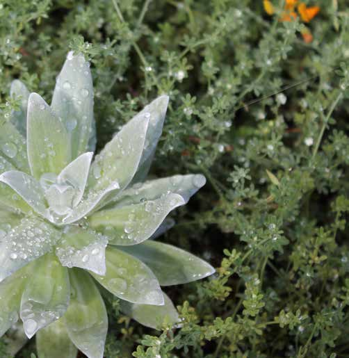

A Nossa Empresa
A impulsionar a inovação em biorrefinaria sustentável na Ilha da Madeira desde 2011.
A Missão de Biorrefinaria
A missão da MadeBiotech é desenvolver e promover o conceito de Biorrefinaria Sustentável para diferentes tipos de biomassa.
No nosso dia a dia, vários derivados do petróleo e produtos sintéticos podem ser substituídos por alternativas naturais — desde que a tecnologia adequada esteja disponível a preços e qualidade atraentes. A bioeconomia veio para ficar!


Inovação Estratégica para PMEs
Para além dos nossos próprios projetos de I&D, desenvolvemos investigação para os nossos clientes nos nossos laboratórios e instalações sob garantias de confidencialidade. Esta solução permite que PMEs inovem e se adaptem sem necessidade de grandes investimentos de capital.
2011
Fundada
>2 M€
Investido
60 L
Biorreator
PMEs
Foco